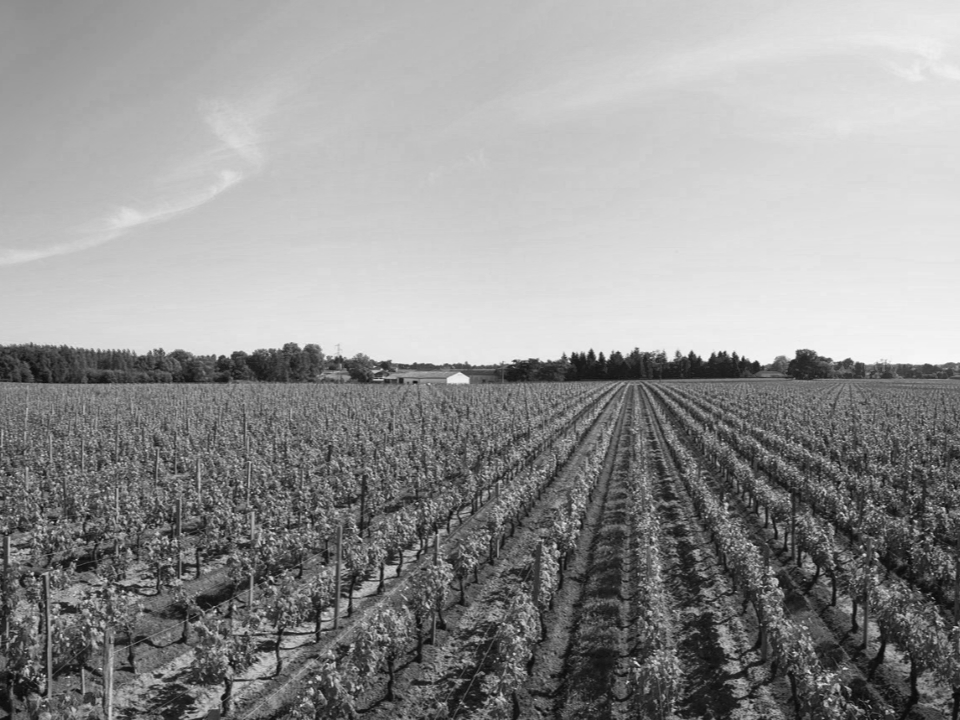
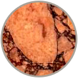
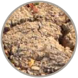
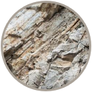
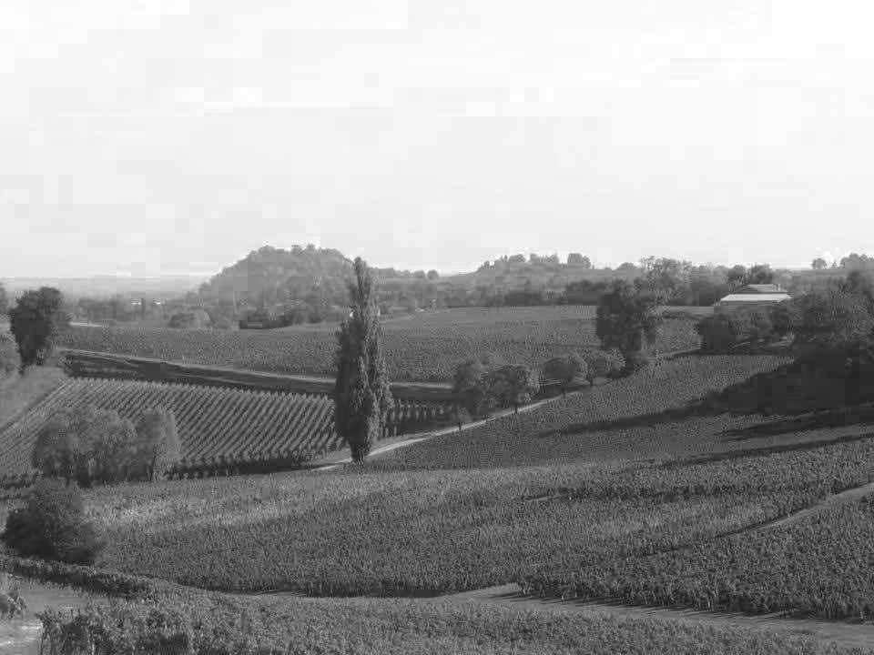
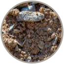
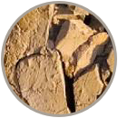
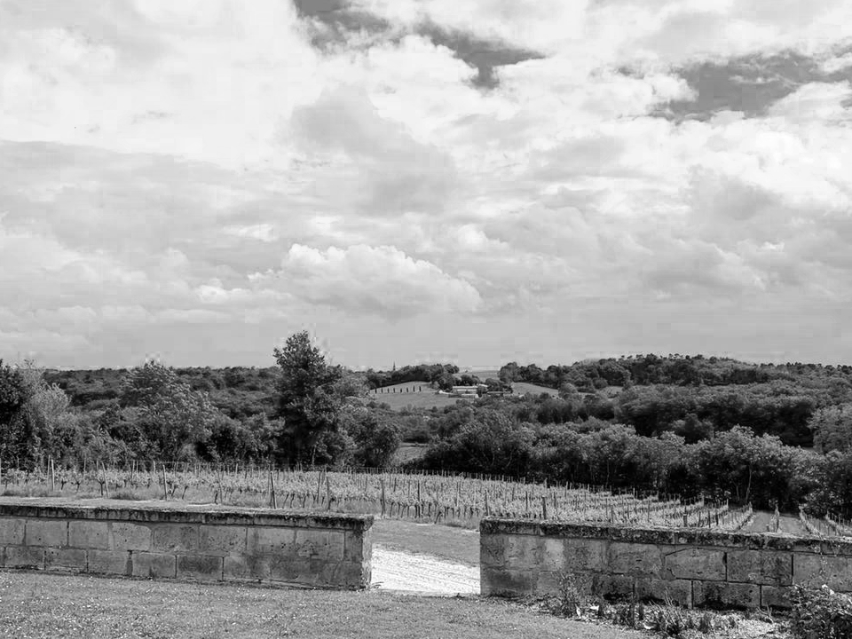

Our Vineyards

Pomerol
-
Pomerol lies immediately to the east and north-east of Libourne.
It is the smallest of all the major Bordeaux wine producing
appellations, with only 800 hectares under vine in Pomerol. This
miniscule area's wines define the Merlot grape at its very best.
-
It stands on a gravel bank (a feature it shares with the
prestigious appellations of the Médoc). The soils of the Pomerol
region are very diverse with a mixture of gravel, sand and clay
scattered across the plateau.
-
Pomerol is the home of the three most expensive wines in all of
Bordeaux, Petrus, Lafleur and Le Pin.
-
All Pomerol producers were required to make their wines at their
chateau, which must be located within the boundaries of the
appellation.
-
Pomerol is exclusively a red wine with the only permitted grape
varieties for AOC wine being Merlot, Cabernet Franc (Bouchet),
Cabernet Sauvignon and Malbec (Pressac). And its wines are known
to be of maximum elegance, richness, and complexity.
Types of Soil
-

CLAY LIME STONE
-

ARGILE
Grapes
Fronsac
-
Like Saint-Emilion, just a few miles to the east, Fronsac has a
picturesque landscape made up of woodland and hills.
-
The soils here are composed more of sandstone and limestone than
clay, giving the vines a certain resistance to hotter weather.
-
Merlot is the dominant grape in Fronsac and is regularly paired
with Cabernet Franc. Malbec is used to add complexity to the wines
and Cabernet Sauvignon may also be included, although it is less
commonly used because it doesn't ripen as well in the
appellation's cooler soils.
-
It also has a rich history reaching back hundreds of years, when
the area was much favored by French nobility.
-
The appellation is known for offering affordable alternatives to
the high-priced wines of the Médoc, Pomerol and Saint-Émilion.
Types of Soil
-
CLAY LIME STONE
-

CHALKY-CLAYOUS
Grapes

Lussac-Saint-Émilion
-
Located on the right bank of the Garonne and Dordogne rivers, the amphi-theater shaped Lussac
Saint-Émilion facing south equips its vineyards with naturally good drainage and plenty of
sunlight.
-
The terroir of Lussac is characterized by the diversity of its soils, distributed between the
plateaus, the sides of the hills, and small valleys, the vines grow in mainly clayey limestone
soils.
-
The grape varieties permitted within the Lussac-Saint-Émilion appellation are Cabernet Franc,
Cabernet Sauvignon, Malbec and Merlot. Merlot usually dominates the blend.
-
To qualify for the Lussac-Saint-Emilion appellation, wines must contain a minimum of 11% alcohol
and come from vineyards planted to a density of less than 5500 vines per hectare. Wines made
from hybrid vines or those under three years old do not qualify.
-
The Lussac wines express delicious, intense aromas with notes of red fruit and underlying hints
of liquorice, prune and spice.
Types of Soil
-

SANDY GRAVEL
-

SILTY CLAY
Grapes
Médoc
-
One of the key appellations in the left bank of Bordeaux. Located
between the Atlantic Ocean and the Gironde, covering an area of
16,500 hectares, origin of the name comes from the Latin word
‘inmédio-aquae’ which means ‘between the waters’. This has
accentuated the abundance of water around the Médoc appellation.
-
Médoc has an alluvial soil composition of mainly sand, clay and
gravel, it became a unique terrain in the Left Bank. Furthermore,
the high gravel content also allows a good natural drainage.
-
Médoc is planted with Cabernet Sauvignon and Merlot, and to a
lesser extent Petit Verdot and Malbec (locally called "Côt"). Also
allowed within the AOC regulations are the varieties Cabernet
Franc and Carmenere.
-
Top wineries like Château Lafite Rothschild, Château Latour,
Château Haut-Brion, Château Margaux are all located in the Left
Bank.
-
Wines produced from this appellation are delicate, they deliver
fruit scents and flavors of cassis, blackberry, dark cherry,
vanilla, coffee bean, spice and licorice; often tannic when young,
harmonious and splendid when matured.
Types of Soil
Grapes

Bordeaux
-
The Bordeaux appellation covers the entire Bordeaux wine region, a
very large geographical area with a wide variety of soils and
terroirs.
-
The wines are not produced from grapes grown exclusively in the
specific AOCs such as Margaux or Pomerol, but are either sourced
from a variety of different vineyards or use different grape
blends and aging methods otherwise not permitted within the other
AOCs.
-
For red wines, the most planted grape varietals are Merlot and
Cabernet Sauvignon. As most regional Bordeaux AOC wines are
produced on the Right Bank, Cabernet Franc is often found in the
blend too. Winemakers are using more and more Malbec, but Petit
Verdot is not often seen yet.
-
In the right hands, wines can be excellent values with good
flavour structure. Bordeaux reds are known for offering a palette
of infinite nuances and able to combine their virtues in many
ways.
- Bordeaux is a wine meant to be enjoyed with others.
Types of Soil
-
 GRAVEL
GRAVEL
-
CHALKY-CLAYOUS
Grapes